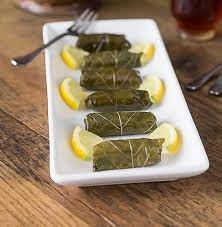

Dolmas

Description
Stuffed grape leaves, aka dolmas or dolmades, are likely the most iconic Mediterranean food out there. They consist of grape leaves stuffed with rice, onion, beef, and spices.
Ingredients
- 1 16oz jar of grpae leaves in brine
- 1.5 cups short grain rice
- Olive oil
- 1 large onion finely chopped
- 12oz ground beef
- Salt and Pepper
- Lemon juice
- 1 tsp allspice
- 0.5 tsp cumin
- 1/4 cup chopped parsley
Steps
- Soak rice for 20 minutes
- Cook meat with onions until fully browned then season with spices
- Combine meat, rice and parsely in a bowl and mix well
- Prepare cooking pot by lining it with 3 layers of grape leaves to prevent dolmas from sticking
- Fill grape leaves with 1 tbsp prepared mixture and fold and roll closed
- Neatly arrange stuffed dolmas in pot add a small plate to keep them weighted down
- Add water until covering dolmas and cook covered over medium heat until the liquid has been absorbed
- Remove plate, add lemon juice, and cook covered over low heat for 40 minutes
- Enjoy!